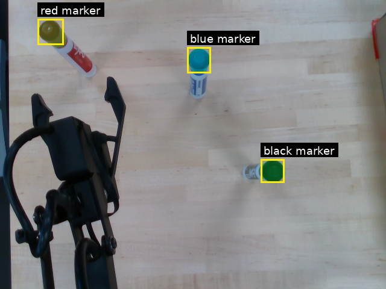
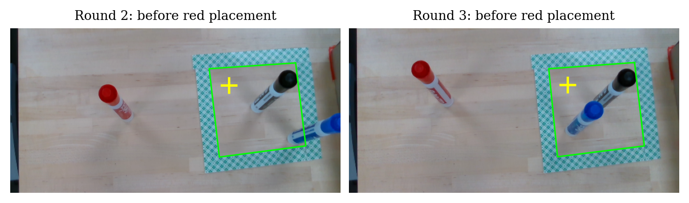
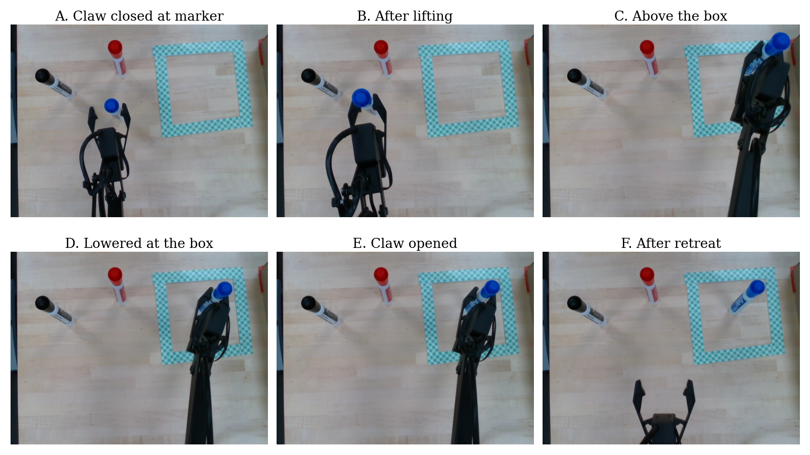
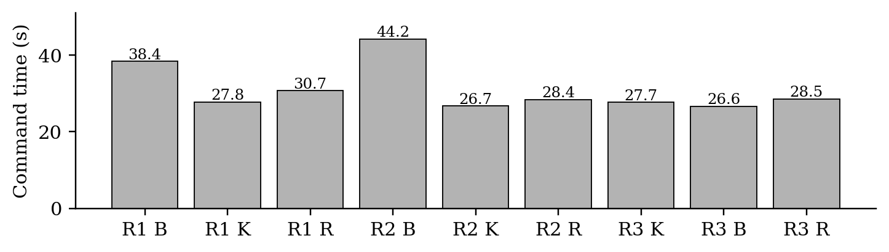

Edge vs. Cloud AI for Robotic Marker Placement




Project Overview
I am testing whether onboard AI is good enough for a robot that picks up a requested marker and places it inside a taped box. I connected pretrained NanoOWL detection and NanoSAM segmentation with a RealSense depth camera, Jetson Orin Nano Super, and uArm SwiftPro. Cloud processing is the next comparison; it has not been tested yet.
Key Features
- Text-requested marker detection and segmentation
- Depth-based camera-to-arm calibration and placement
- Onboard vision processing on a Jetson Orin Nano Super
Local Results
Nine commands completed across three rounds, averaging 31.0 seconds per command. The camera confirmed six markers inside the box; three placements could not be verified. This is an end-to-end time that includes arm movement, not model inference alone. Camera-to-arm calibration had about 0.71 mm fitting RMS error and a 1.25 mm maximum error across separate check positions.
Next Step
I plan to compare the local system with cloud vision processing using the same scenes and arm settings, measuring task time, verified placements, and cost.
What I Learned
I learned to connect vision models, depth measurements, calibration, and arm control in one workflow. Testing showed me why a completed command does not prove a successful grasp, and why confirmed placements and total task time need separate measurements.